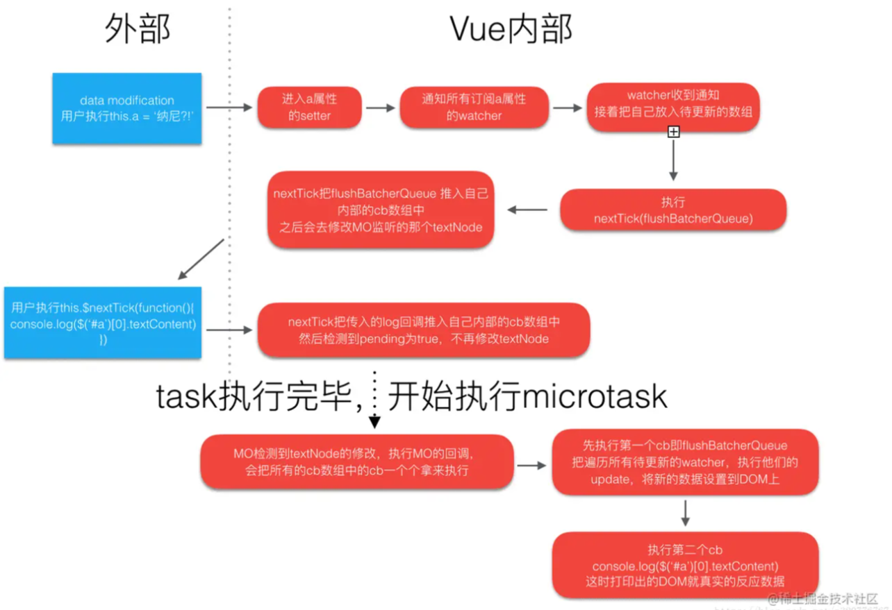

Vue 在更新 DOM 时是异步执行的。只要侦听到数据变化，Vue 将开启一个队列，并缓冲在同一事件循环中发生的所有数据变更。如果同一个 watcher
被多次触发，只会被推入到队列中一次。这种在缓冲时去除重复数据对于避免不必要的计算和 DOM 操作是非常重要的。然后，在下一个的事件循环“tick”中，Vue 刷新队列并执行实际 (已去重的) 工作。Vue
在内部对异步队列尝试使用原生的 Promise.then、MutationObserver 和 setImmediate，如果执行环境不支持，则会采用 setTimeout(fn, 0) 代替。
自己理解:为什么this.$nextTick 能够获取更新后的DOM？
调用this.$nextTick 其实就是调用nextTick 方法，在异步队列中执行回调函数。根据先进先出原则，修改Data
触发的更新异步队列会先得到执行，执行完成后就生成了新的DOM，接下来执行this.$nextTick 的回调函数时，能获取到更新后的DOM元素了。
vue异步更新的原理
- 修改 Vue 中的 Data 时，就会触发所有和这个 Data 相关的 Watcher 进行更新
- 首先，会将所有的 Watcher 加入队列 Queue。
- 然后，调用 nextTick 方法，执行异步任务。
- 在异步任务的回调中，对 Queue 中的 Watcher 进行排序，然后执行对应的 DOM 更新。
相关链接
https://juejin.cn/post/6844904169967452174#heading-1
https://zhuanlan.zhihu.com/p/364479245